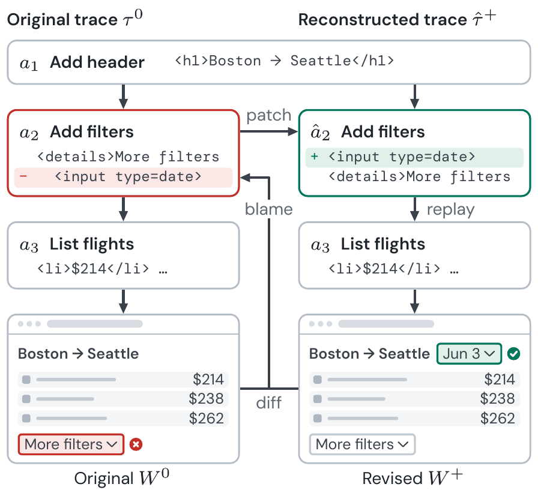
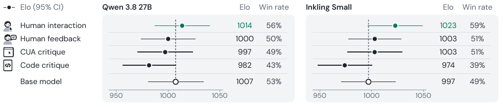

RELIEF: Revision-Based Learning from Interactive Experience and Feedback
Manuscript · Submitted to NAACL 2027

Abstract
Code generation models are increasingly used to produce interactive artifacts, such as websites and user interfaces. Many properties that determine whether these interfaces are useful only become apparent through realistic interaction, making them difficult to incorporate into model training. In this paper, we introduce RELIEF (REvision-based Learning from Interactive Experience and Feedback), a method for improving code generation models using feedback on their generated interfaces. RELIEF uses a coding agent to revise these interfaces, then incorporates the improvements into their original generation traces to produce supervision for fine-tuning. To evaluate RELIEF, we collected a dataset of 200 synthetically generated websites paired with 355 interaction recordings and accompanying feedback from 24 users. We used critiques derived from code inspection, automated interaction, explicit human feedback, and human interaction recordings to fine-tune variants of two code generation models. Our results show that feedback effectiveness varies with base model capabilities, with critiques inferred from human interaction recordings leading to the largest usability improvements overall under our tested models.
Method
RELIEF uses a coding agent to revise generated interfaces from usability feedback. The revisions are then incorporated into the original generation traces to provide supervision for fine-tuning the generation model. We compared four feedback sources using the same revision and training procedure.
Feedback sources
| Source | Procedure |
|---|---|
| Human interaction | A video-capable model inferred usability critiques from recordings of participants completing tasks. |
| Human-written feedback | Participants reviewed their task recordings and described the usability problems they encountered. |
| Computer-use agents | An agent attempted the tasks and produced critiques from its interaction history. |
| Coding agents | An agent inspected the website source code without interacting with the interface. |
Trace reconstruction
RELIEF records the website source after each file-writing action in the original generation trace. It uses code differences and Git-blame-style attribution to identify the actions responsible for revised code, then patches those actions. Replaying the reconstructed trace verifies that it reproduces the revised website. The resulting traces are used for supervised fine-tuning with LoRA adapters.

Separate variants of each base model were fine-tuned for each feedback source. Reconstruction preserved the original reasoning while revising code-writing actions. Sections 4 and 6 of the paper describe the procedure and its limitations.
Evaluation
We evaluated variants of Inkling Small and Qwen 3.8 27B using human preference comparisons and task completion on held-out websites.
Human preference

The human-interaction variants received the highest observed Elo ratings for both base models. The confidence intervals overlap, so these results do not establish a definitive ranking of feedback sources.
Task completion
| Training condition | Inkling Small | Qwen 3.8 27B |
|---|---|---|
| Base model | 78.8% | 83.7% |
| Code critique | 71.7% | 83.2% |
| Computer-use-agent critique | 82.6% | 89.7% |
| Human-written feedback | 75.5% | 86.4% |
| Human interaction | 84.8% | 90.8% |
A computer-use agent evaluated 184 held-out tasks across 14 websites. Task completion was measured after up to three generation retries; first-attempt eligibility was reported separately.
Feedback inferred from human interaction recordings produced the highest observed task completion in both model families. The effects of the other feedback sources varied by base model.
BibTeX
@unpublished{li2026relief,
title={Revision-Based Learning from Interactive Experience and Feedback},
author={Li, Jiawen and Ge, Chenming and Gao, Alice and Vempati, Rishab and Peng, Yi-Hao and Wu, Jason},
year={2026},
note={Manuscript submitted to NAACL 2027},
url={https://oscar-ge.github.io/files/RELIEF.pdf}
}